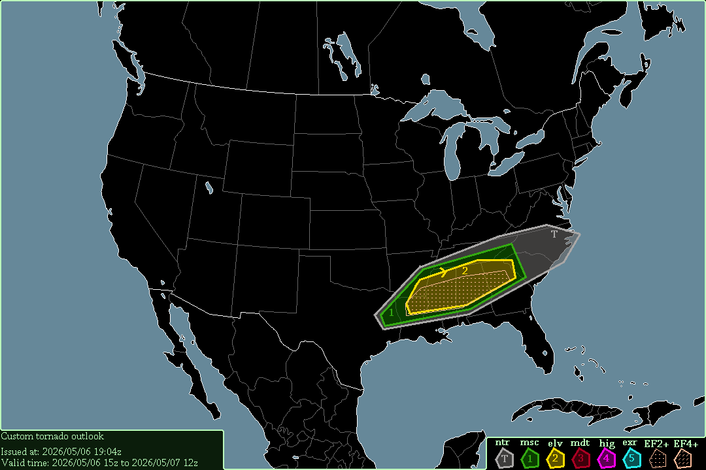

A tornado will be expected from eastern Kansas to Wisconsin & northern Illinois, starting at 19:00 UTC, 2026/06/10.
Thunderstorms will be expected in the Plains & Midwest, as well as southern Canada, southern Mexico, southwestern Yucatán, Florida, the South-Atlantic, southern Cuba, & Hispaniola, starting at 12:00 UTC.
0-1km SRH will exceed 150-200 m²/s² in most of the Elevated area, so tornadoes are definitely likely. CAPE will exceed 2000-3000 J/kg in the risk area, so severe thunderstorms are certain. STP will reach 2-4 in eastern Iowa, so significant tornado(es) may occur there.
-- Cenn Devel, 2026/06/09 16:47z.